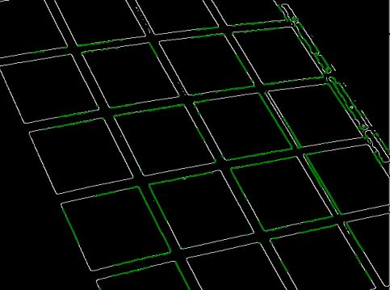

Hough transform is a feature extraction technique used in computer vision to detect simple shapes such as lines and circles in images. The mian idea is to transform the image space into parameter space where shapes such as lines can be easily detected. Hough transform can have applications in areas such as lane detection in autonomous driving, pattern recognition, and generalized shape detection. The main steps involve edge detection in the images, then mapping each edge point (x,y) to another parameter space such as interms of radius and angle. Then the accumulator array for the new parameters is created where by for each edge point, the parameters are computed and voted in the accumulator array. Finally, the peaks in the accumulator array are found and the shapes corresponding to the peaks in the original image space are found. The main steps in hough transform are written below and the complete code with a detailed explanation is provided in the Jupyter Notebook at

Detected line segments using hough transform
Canny edge detection: is a simple but efficient process used to find edges in images. The main steps are:
-
Apply gaussian filter to smoothen and reduce noise in the image.
-
Compute the gradient direction and intensity change of the image at each pixel, in this case using the sobel operator.
-
Perform non-maxima suppression to find the local maxima in the gradient direction to mark as edges.
-
Apply P-tile thresholding which sets the the threshold based on the specified intensity percentile making the edge detection process adapt to the image's intensity distribution.
Finding line segments: After extracting the edges in the image using intensity gradient change, the lines segments in the image from the edges should be detected. The main steps are:
-
For each edge point \( (x,y) \) in the image, map it to the new parameter space \( ( \rho, \theta) \) where \( \rho \) is the distance from origin (top left corner) to the line, and \( \theta \) is the angle of line normal using \( \rho = x\cos(\theta) + y\sin(\theta) \). Each line in Cartesian space can be uniquely represented by a single point in this new Hough space.
-
An accumulator array is created where \( \rho \) and \( \theta \) are the two dimensions of the matrix with a specified step size in order to keep track of the number of votes for each for each \( ( \rho, \theta) \) pair. The array is initialized to zero.
-
Increment the corresponding \( ( \rho, \theta) \) cells in the accumulator array for the detected edge point \( (x,y) \).
-
Identify the peaks in the accumulator array which as stated these points in Hough space correspond to lines in the original image space.
-
After extracting the hough lines from the peaks, identify the points in the line that correspond to edge so the line segments can be effectively extracted.